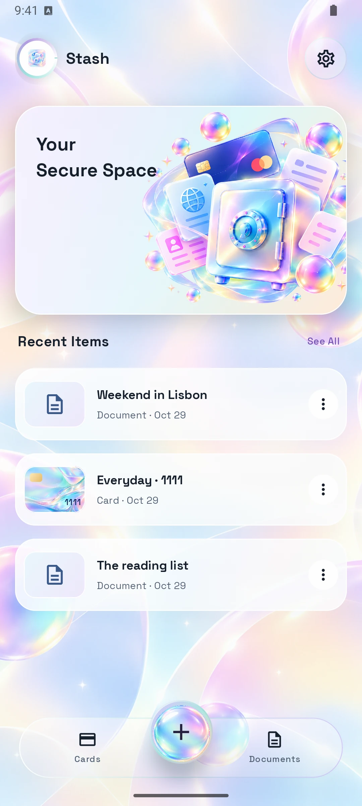
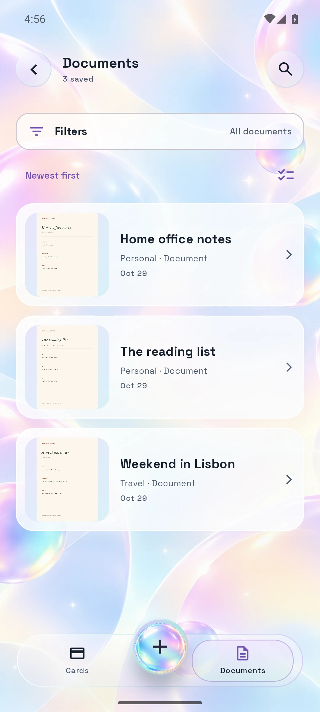
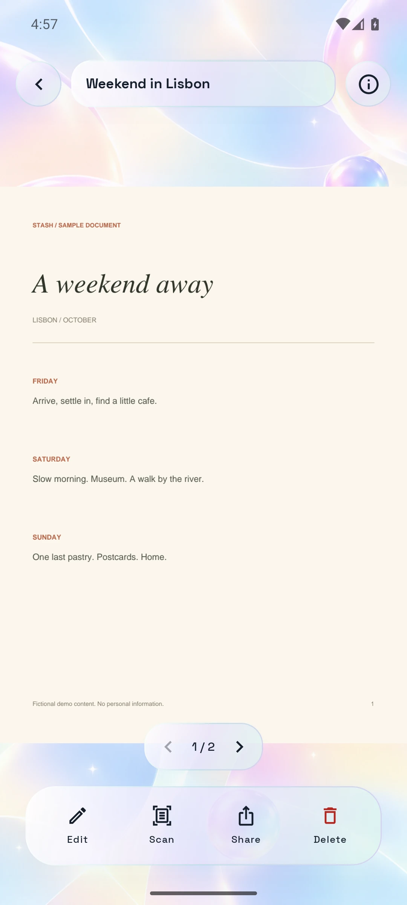

From paper
to pocket.
Scan a page or import a file. Keep multiple pages in one swipeable document. Read text on your device and check the results before saving.
Your cards, documents and everyday essentials.
Beautifully organized. Right here on your phone.

The card you need. The page you saved. The details you always forget.
Give them a place that feels effortless to find again.
Keep bank cards together with a proper landscape preview. Pick your artwork, add a subtle glint, or bring your own image, GIF or video.

Scan a page or import a file. Keep multiple pages in one swipeable document. Read text on your device and check the results before saving.
Save notes and passwords, generate a strong password locally, and organize documents into folders and tags that make sense to you.
Warm light, soft dark, floating glass controls and your choice of background. Turn down motion whenever you want a quieter experience.
Stash doesn’t need an account, a subscription or a connection. The Android app has no internet permission.
See how it’s builtYour vault and attachments are encrypted with AES-GCM. Android Keystore holds the device-bound key.
Find a saved document, open a card or read text using bundled recognition. Your data stays local.
Share a file or export your information only when you ask. Encrypted backups restore on the device that created them.
Thoughtful details, from the first save
to the next time you need it.



Yes. Download the Android APK from GitHub. There’s no account or subscription to set up.
Download the release APK, open it on an Android 8.0 or newer device, and allow installation from your browser or file manager when Android asks. Only install a file you trust.
Encrypted backups are currently tied to the device that created them. Readable exports can help you keep a separate copy of your information, but they are not encrypted. Keep them somewhere private.
No. Stash bundles on-device Latin text recognition. Results can be imperfect, so check details against the original before saving. Identity cards also support manual entry.
They are personal wallet views of details you save. Keep your original scans available. The small website QR links to venusapp.in and contains no identity data.
This production release uses a new signing key and cannot install over the old debug-signed builds. Export and verify your information before changing installations. Uninstalling deletes the local vault and its device-bound key; its encrypted backup cannot recover that deleted key.
Version 1.0.0 · Android 8.0+ · Free & offline